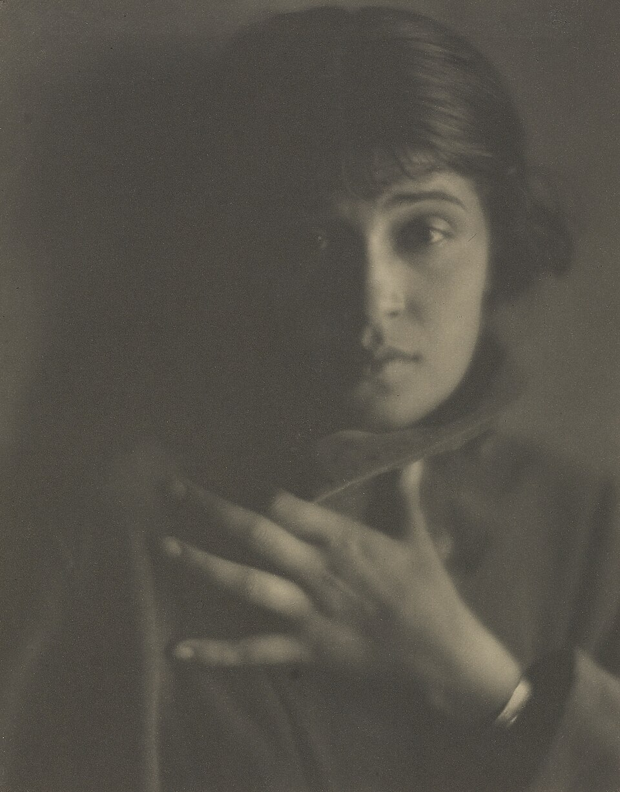
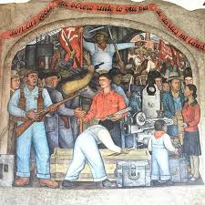
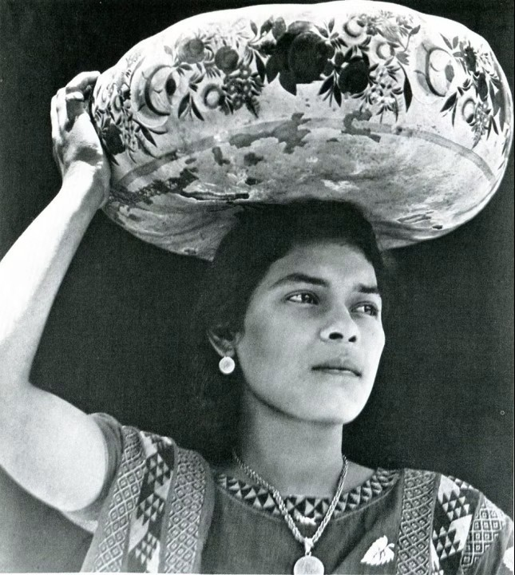

Tina Modotti: A Blank Face Between Art And Revolution

Tina Modotti, by Edward Weston
We have been much concerned with expats in Italy, but there have been some astonishing Italian expats in the United States. Tina Modotti's life could make passionate reading, a biography that, doing justice to her political work, measured one courageous and gifted artist of the camera against the epic events of the first half of the 20th century. The Italian publication of Letizia Argenteri's Tina Modotti, Fra arte e rivolutione (FrancoAngeli, Milano, 2005) lets us reconsider the same book published in 2003 by Yale University Press (Tina Modotti Between Art and Revolution). The brief new introduction in Italian by Claudio Natoli points to why it was important to make the book available in the author's mother tongue. It isn't only because Argenteri's acquired English is flat and occasionally awkward. Natoli recalls, as indeed Argenteri will remind us throughout, that the communism Modotti professed remains a live issue in Italy.
Italy's once powerful Communist Party (PCI), now drastically reduced to feuding factions, still has some political weight in local government and in a parliamentary system based on very mixed coalitions. Where Argenteri's English readers dwell, communism was essentially a 1930's phenomenon. Her Italian text will be read where it's still possible to have a fistfight over the Stalinism of Modotti and her last lover. In Italy the shop-worn joke that the PCI was an alternative church still has relevance. (If you find this over the top, watch a film clip of Palmiro Togliatti's funeral in Rome in 1964.) With its family fidelities, saints, martyrs, black sheep, momentous events and mighty doctrinal clashes, the PCI remains one of the great points of historical reference for Italians. Right up to 1990 its cultural apparatus was at the center of Italian life.
Palmiro Togliatti's funeral, Rome 1964
Indeed Argenteri appears a bit miffed that Italian communism passes for a quaint anomaly and raises little interest in America where she has studied and taught for years. She would like Modotti to be appreciated there not only by feminists and anarchists but also by "the true left" that has "virtually neglected" her. The reader learns where the author's own heart lies when she tells us, "While the French Communist Party was tied to Moscow, the Italian Communist Party always tried to be independent from Moscow and to act accordingly." But she's rarely partisan. Quite to the contrary, she lays out the proof on both sides of the innumerable unresolved historical controversies involving Modotti.
There are no sweeping affirmations and when she finds evidence she leaves a question open. The contention that this is the first attempt at an "academic biography" of Modotti is borne out by the large range of archives consulted. Many of these sources, such as the Italian periodicals of California, have never been scrutinised before in respect to Modotti. What Argenteri gives us is a historical study of considerable value for cutting away the incrustation of propaganda, wishful thinking and mythologizing. Poor Tina, like Frida Kahlo and Che Guevara, has almost completely disappeared in the fog of our daydreams.
A history book, then. But a biography? The author herself senses that the two are not quite the same thing. Even the quotes she offers in her favor on the subject work against her. "The gist of writing biography, today more than ever before, is to render the cold and dead warm and alive (Andrew Burstein)"; "...the importance of story-telling as the elementary condition of historical explanation (Simon Schama)." Argenteri's flood of precisions on Modotti's life and times never brings her to life. The fair-minded magistrate's approach is the negation of story telling. Doubtless conscious of these failings, the author remarks with petulance at one point that after all she's not telling "the story of a myth or character in a play..." But in a sense she's called upon to do just that. Biography has to respect history, but if it fails to get inside the subject's mind and put that person at the very center of the story, it never amounts to anything more than history. Argenteri remains ever on the outside checking facts.
Those facts are often useful, sometimes crucial. But on occasion the pursuit of detail leads to outright academic crankiness. Take only one instance. Modotti was born in Udine, and we are happy enough to learn the address of the family home there, 113 Pracchiuso Street. But the last thing we need to know is this story-clogging bit of etymology:
"Pracchiuso, in dialect praclus, derives from pratum clausum, which suggests that at the end of the nineteenth century there was a meadow, used for the animals belonging to a patriarch's residence, closed (clausum) to outsiders."
The author's hesitation to extend empathy marks the whole book. Indeed her refusal actually to embody Modotti becomes her authorial modus operandi. We have cautious researcher's notations about Modotti, but the woman herself stays under wraps. We never get up close. She's not present. A single example will suffice. When the Loyalists meet defeat in Spain, Modotti, who's been an active participant, flees the country. After some shuttling around Europe—return to Moscow could have meant Siberia—she manages to enter Mexico again, but clandestinely because she's previously been expelled. Her lover, Vittorio Vidali, the ambiguous Commander Carlos of the Fifth Regiment and the Madrid front, struts around the city like a hero while...
...Modotti did everything she could to pass unnoticed, given her precarious legal status. Most of the people who met her in that period say that she seemed to live in a dissociated state, a passive observer of things around her. They found her rather opaque and different from the previously glamorous Tina—understandably so; events such as a fratricidal war can alter a character. For three years Modotti had witnessed people dying in front of her eyes, and death must have become a constant in her life. She herself said that she had seen "so many horrible things in Spain." But apart from this reference to the war, she left no writings from that period, so I can only speculate about her feelings or rely on the impression of acquaintances.
"Well," the reader wants to shout, "go ahead and speculate!" But Argenteri won't take her own bait. Instead, she only serves up more facts. First we have the irrelevant particulars of another woman exile traveling from Spain to Mexico. This Carmen Romero's situation has nothing to do with Modotti's and the two never meet. The reader may be pleased or displeased to make her acquaintance, but Carmen definitely doesn't belong in a biography of Modotti. Then, while he's still hoping that the elusive Modotti will step upon the stage, Argenteri throws the reader a poem in Italian that's touching, but, again, beside the point, about the Civil War in Spain by Salvatore Quasimodo.
The author runs a simple ten-line poem of Modotti's into the ground with three dense pages of over interpretation. A chapter subtilizes over her photographic work. But if a picture is worth a thousand words, those words can take revenge and destroy a photograph when piled on by a heavy academic hand. Once Argenteri has told us that Tina never took a detached view of her subjects and always felt deeply for their poverty, enough has been said. A photograph is by its nature ambiguous, which makes its value. The rest is only poetry, not Tina's visual sort, but Argenteri's word spinning.
* * * * *
And yet Tina Modotti's life—we repeat—could make passionate reading. The task would be simply to set her before us unencumbered by "remarks." The amazing trajectory of Tina's existence of course makes work like Argenteri's necessary. Romanticizers of every stripe have to be kept at bay. But why must we smother the drama, the color, and the excitement of a life constantly being reinvented under the pressure of history?

Diego Rivera mural: Inside the Arsenal, 1928
In telling Tina's story, writers could learn much from Diego Rivera's mural Inside the Arsenal painted in 1928 for the Ministry of Education in Mexico City. Tina stands looking up admiringly into the eyes of Julio Antonio Mella as if gauging his next move. Mella himself looks over Tina's head into the distance as befits a revolutionary idealist. Beside them, all but his thick-featured face hidden by the iron of a piece of machinery, stands Vittorio Vidali. His regard ignores the distance and fixes like a busy puppet master's on the couple.
Soon afterwards Mella would be gunned down and Tina would seek guidance in Vidali's eyes. Rivera would be expelled from the Mexican Communist Party. It was whispered that Trotsky once praised his paintings. Party hacks that had called Rivera "the great revolutionary painter" now wrote that he was "political garbage." Tina shamefully joined the pack in pursuit of her former friend: "He will be considered, and is, a traitor. I need not add that I shall look upon him as one too..."
Argenteri insists that Americans, naïve about communism, can't really understand Tina because they don't understand her ideological beliefs. But a naiveté that puts human decency before twisted words on paper is no disgrace. The fact that ideology kills is a prime lesson of the last century, from the slaughter of P.O.U.M. members and anarchists in Spain to the great purification of Pol Pot. Argenteri sees ideology as a kind of intellectual prestige that she takes, naively, at face value and refrains from judging by its results.
Tina's lifelong journey began obscurely enough. Her family, eventually numbering seven children, was amongst the poor of the then poor Northern Italian town of Udine. Tina was a year old in 1897 when she began her itinerant life and her father, a mechanic, took the family to Austria in search of work. They returned to Udine in 1905, whence the breadwinner immigrated to America on his own, settling after a while in San Francisco. The set patterns of the old world crumbled rapidly in the dynamic post earthquake economy, and Giuseppe Modotti tried his hand at several businesses including photography.
In Udine at thirteen, Tina began a three-year stint as a silk worker. One by one the family joined their father in America. It was Tina's turn in 1913 and at sixteen she arrived at Ellis Island alone. When Tina reached San Francisco, she was already a veteran of displacement within Europe, hard factory work, solitary crossings of the Atlantic and the breadth of America, and cumbersome immigration procedures. A less spirited teenager would have settled for a safe haven.
Tina began work in San Francisco as a seamstress. Change was now second nature to her, and so was a growing American sense that everything was possible. She assimilated rapidly and without a backward glance. The dressmaker was soon a modiste and then a model in a department store. The Italian community pulsed with energy that had lain dormant in Europe. The local stage burgeoned. Tina, petite, shapely, possessed of striking eyes, was soon playing Latin characters in Italian language stage productions.
At this point, men entered Tina's life, and so does a ticklish problem for her biographers. She will often startle us by her autonomy and strength. Yet there's no escaping the fact that each time her life changed course it was together with a man already moving resolutely in the chosen direction. Had Tina decided to redirect her life and sought out a partner who had made the same decision? Or did men overpower her with their life projects? Perhaps questions of the sort are best avoided in favor of concentrating on Tina's accomplishments and individuality.
Roubaix de l'Abrie Rickey, known as Robo, was only an imaginative boy from Oregon. He worked out his resonant nom de guerre on the strength of a distant French Canadian connection. He came to San Francisco to study art and play the artist to the hilt in the green carnation style. The flavor of the times can be savored in his marriage to, and rapid divorce from Viola McClain who called herself Vola Dorée.
Robo would introduce Tina to bohemian San Francisco and the notion of visual art and poetry as ecstatic ends in themselves. The lovers soon moved to Los Angeles and formed a glamorous couple at the center of a circle of art fanciers and miscellaneous outsiders. It was 1917 and they weren't unaware of world events like the social upheaval south of the border or the Russian Revolution. But their main concern was artistic innovation and new, non-conventional departures in personal life. Tina, already an experienced stage actress, took roles in three Hollywood films.
Like other California radicals, Robo was attracted to Mexico, for him bathed in a mystical light. After a sojourn of a few months there in 1922, publishing drawings and delighting in the country, he caught smallpox and died. Tina, who had been on the point of joining him, (they had never in fact married) also lost her father just then. She was ready to turn her back on California.
Robo, had a fine hand for drawing and a poet's way with words. Despite his poseur airs, he was a genuine artist. So was the next man in Tina's life, the established Los Angeles photographer Edward Weston. He was thirty-seven and married with four sons. Very much in the spirit of the 1920's—think of Sherwood Anderson or one of his protagonists—Weston felt his art suffered from his conventional life and surroundings. He saw a remedy in moving to Mexico and continuing his work there for a time. Tina, at twenty-seven, unattached and ready for a new life, agreed to accompany him. He would take her on as his assistant and business manager. In lieu of salary, she would receive lessons in photography.
It has been said that while the Mexican Revolution of 1910 failed politically, it succeeded culturally. When Tina and Weston arrived in 1923, the painters Rivera, Orozco, Martinez, Siqueros, and Tamayo were all at work. Poetry thrived, and foreign artists and writers were welcomed. The couple soon became part of this lively international artistic community. Weston was acclaimed for having understood the beauty of the country and Tina was credited with acquiring her own remarkable style as a photographer. It would later be said that the pair single-handedly established modern photography in Mexico.
Nevertheless, their approaches differed. Mexico for Weston represented a personal adventure, a voyage of discovery of his own powers. He took his art to Mexico and it grew there, but he would afterward take it home with him again. Tina had found her home and her art in Mexico. The poverty she saw there affected her as nothing else in her life had managed to do. This was the pure principle at the origin of her political commitment, and she had discovered it with her camera. Weston characteristically warned her about sentimentalizing the proletariat and the Indians.
By the time Weston left Mexico for good in 1926, he and Tina were no longer lovers, and she was on her way to assuming another identity. Art, politics and free love had been a heady and productive mixture in her first Mexican years. Tina, physically incapable of motherhood, now found her family relationships among the politically like-minded. She began her long association with Red Aid, a mutual help organization of the left. She collaborated with El Machete, a Communist Party review founded by artists. All the men in her life would henceforth be political activists.
Xavier Guerrero, the first of Tina's militant partners could have been a poster boy for the revolutionary artist. He was an intransigent member of the Mexican Communist Party whose hierarchical decisions he accepted with something like religious faith. Ordered to the Lenin School in Moscow for three years, he packed his bags without a murmur. It was just before he left in 1927 that Tina joined the Party herself.
Guerrero's austerity sharply contrasted with Tina's radical bohemian friends of the past. He was not immune to jealousy. When Tina wrote him in Moscow that her affections had shifted to another militant, Guerrero was as bitter as any thwarted patriarch. The new messenger from the gods was a Cuban, eight years Tina's junior, Julio Antonio Mella. He had been one of the founders of the Cuban Communist Party and had tangled not only with the dictator Machado but also with comrades on the Cuban left. Forced into exile, Mella, a born maverick, soon enraged Mexican Communists by daring to criticize Stalin. When he was assassinated in 1929, Machado's agents were presumably responsible. But the Mexican Communist Party was not unhappy at his demise. Tina herself had to disprove accusations of complicity in his murder.
Mexico City then took on a more somber hue. The Mexican Communist Party predated the Bolshevik Revolution and had been a fusion of Marxism with populist libertarianism. Its war cry was as often Viva Zapata as Workers of the World Unite. Tina had been captivated by the eruption of the humble and the indigenous into the world of politics and art. It heralded breakthrough and fresh beginnings. Most of all, it spoke of freedom. Now came the age of iron. Tina made a fateful decision and went along with the purge in the Mexican Communist Party that followed Mella's death. She was learning to obey. It's hard not to see in her a need and desire for stronger discipline. At this juncture she moved closer to the Comintern agent Vittorio Vidali, a Stalinist disciplinarian par excellence.
In 1930 the Mexican Party was made illegal. Tina, declared politically undesirable and deported from Mexico, found herself on a boat to Europe. Vidali left Mexico of his own accord and joined her on the voyage. As long as Tina's life lasted, it would be lived in his truculent shadow.
Tina went to Berlin. Leftist Weimar culture was on the boil there, with writers like Brecht, Babel, and Canetti all active. But Tina, disorientated, lost her confidence and doubted her ability to compete as a photographer. Away from Mexico she felt unable to combine art and political militancy. She opted for the latter and joined Vidali in Moscow. They lived as husband and wife and also—Vidali knew no other way—as mentor and disciple. But keeping alive under Stalin wasn't easy, even for yes-men and sycophants. The ambient paranoia made the couple glad to escape as Soviet agents on missions to various parts of Western Europe. In 1934 they were ordered to Spain.
In 1936 Franco launched the attack that started the Spanish Civil War. Vidali became the first political commissar of the Spanish republican army. His task was to form the fabled Fifth Regiment on the model of the Soviet Red Army. Tina reorganized hospitals, served as a nurse and then resumed Red Aid work. At the same time she learned to shoot and throw grenades with the women's section of the Fifth Regiment.
Vidali's leadership proved ruthless and brutal. He was responsible for the torture and death of many Republicans who rejected Stalin's orders. For instance, Vidali played a direct role in the liquidation of Andres Nin, one of the founders of the Spanish Communist Party. Tina, very close to Vidali in Spain, did not dissociate herself from his crimes. She was a Stalinist too and, if she wasn't a natural killer like her lover, she was not above denouncing dissident comrades.
After the Loyalist defeat in 1939, Mexico proved the most hospitable country to refugees. Vidali entered legally as a hero. Tina, who had been expelled in 1930, arrived with false papers. She was old beyond her years, shattered, listless, but still apparently a Comintern agent. It pained her to even think of her first joyous years in Mexico. She had no money and her relationship with Vidali was in tatters. When Trotsky was murdered in 1940, suspicion fell on Vidali.
Tina died mysteriously in 1942, alone in a taxi, and again voices rose accusing Vidali. She had told a friend, "He is an assassin. He dragged me into an atrocious murder. I detest him with all my soul. Nevertheless I must follow him until death."
On her return to Mexico Tina had refused to touch a camera. It was like a phobia. Or shame. As a photographer she had been generous, open and loving. In her mind the compromises of militancy had cancelled all that out. What had her intriguing with Vidali to do with her original motive of sympathy for the poor? The productive peak of her career had passed by 1930. Party work absorbed her in Europe. Humanitarian efforts took precedent in Spain, but so did the Stalinist manoeuvring that may well have given Franco victory. Tina, back in Mexico where it had all begun, knew that lack of time explained nothing. Her political work had separated her from generosity, openness and love, and so doing made art impossible. The realization left her demoralised. Cameras didn't kill people. Putting hers aside to enter the ideological wars, she had become only another guilty victim.
Tina must have asked herself whether the apolitical individualist Edward Weston hadn't made the wiser choice. He awakened Mexico to modern photography, influenced a generation there and at home with the rigor of his art, and kept turning out innovative work until the end of his life. His fidelity to his talent and vocation could certainly be called egoism. But he didn't take orders from hardened killers or condone their deeds in the name of a better world that the signing of the Nazi-Soviet Non-aggression Pact decidedly did not bring any closer.
The old saw says that it's the victors that write history. The survivors, however, have the last word. Tina Modotti died in 1942 at forty-six. Vittorio Vidali lived on till 1983, reaching eighty-three. Installed as an Italian life senator, he had plenty of leisure to turn out a series of books prettifying his time with Tina and generally tidying up his blood-soaked career. Argenteri regrets that many commentators have as a matter of course cast Vidali in a villain's role. She herself would rather not judge him. But the fact that demonizing goes on doesn't mean that some men haven't acted like demons.
And what of Mexico in all this? For Vittorio Vidali it was a gray site, perfect for deadly political intrigue. For Julio Antonio Mella it was a place where he could make a defiant political stand for a Latin American revolution. Xavier Guerrero saw it as a social tragedy remedied only by international socialist discipline. Edward Weston treasured its innocence and unforgettable beauty of form. Robot toyed with its mysteries while infection taught him its cruel reality. Tina Modotti, sharing all these visions, had been dispossessed of her own: that of a land where she could help and love the poor, undisturbed by homicidal ideologues.

Woman in Tehuantepec, by Tina Modotti